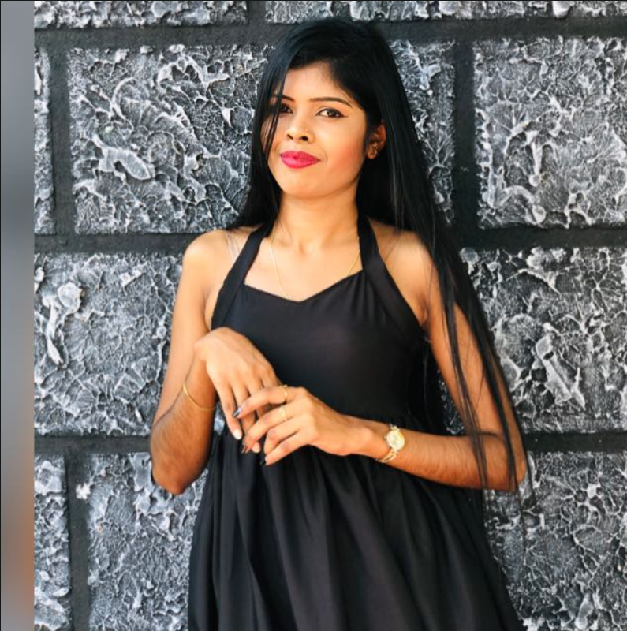

Handcrafted with care
Every bouquet is arranged by hand — never assembly-line made. We take the time to get the details right.
OUR STORY
Dear Flora began with a simple idea — that a handmade bouquet should feel personal, not mass-produced. Every stem, ribbon and finishing touch is arranged by hand, for someone who matters to you.

HOW IT STARTED
What started as bouquets made for friends and family soon grew into Dear Flora — a small handmade flower studio built around care, detail and thoughtful gifting. We don't mass-produce; every order is arranged fresh, based on what you're celebrating and who it's for.
Whether it's a birthday, an anniversary, or just because — we want every bouquet to feel like it was made just for that moment.
WHAT WE STAND FOR
Every bouquet is arranged by hand — never assembly-line made. We take the time to get the details right.
Choose from our signature collection or fully customise your own — the size, flowers, wrapping and message are up to you.
Made to order and ready within 2–3 days, with islandwide delivery so your gift arrives on time, wherever they are.
Browse our handmade collection or design something completely your own.